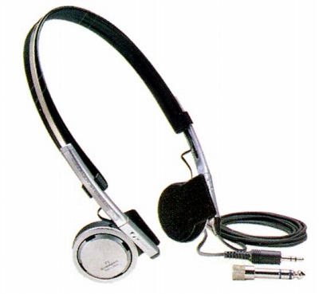

SE-L90

■価格 11,000円■型式 オープンエアダイナミック型■振動板 36�oドーム型(12ミクロン厚ポリエステル）■インピーダンス 40Ω■再生周波数帯域 10-22,000Hz■許容入力 100mW■感度 103ｄB/mW■コード 3ｍ片出し ステレオ2ウェイプラグ■重量 72g（コード含まず）■発売 1982年10月■販売終了 1986年頃■備考 ケブラー入りの補強コード採用 スピーカーユニット部分で90度折りたたみ可能
パイオニアのインデックスへ